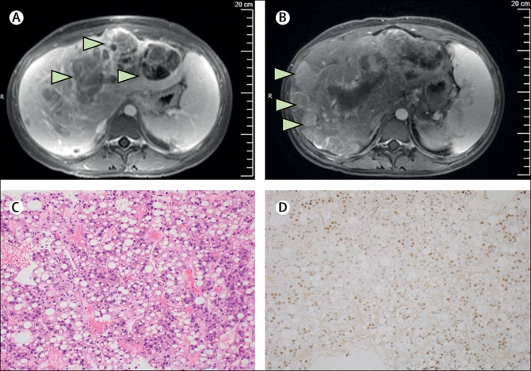

Hepatocellular Carcinoma.

SYMPTOMS:
Most people don't have signs and symptoms in the early stages of primary liver cancer. When signs and symptoms do appear, they may include:
- Losing weight without trying
-
Loss of appetite
-
Upper abdominal pain
-
Nausea and vomiting
-
General weakness and fatigue
-
Abdominal swelling
-
Yellow discoloration of your skin and the whites of your eyes (jaundice)
-
White, chalky stools
CAUSES
Liver cancer happens when liver cells develop changes (mutations) in their DNA. A cell's DNA is the material that provides instructions for every chemical process in your body. DNA mutations cause changes in these instructions. One result is that cells may begin to grow out of control and eventually form a tumor — a mass of cancerous cells.
- Sometimes the cause of liver cancer is known, such as with chronic hepatitis infections. But sometimes liver cancer happens in people with no underlying diseases and it's not clear what causes it.
DIAGNOSIS:
- Blood tests. Blood tests may reveal liver function abnormalities.
-
Imaging tests. Your doctor may recommend imaging tests, such as an ultrasound, CT and MRI.
-
Removing a sample of liver tissue for testing. Sometimes it's necessary to remove a piece of liver tissue for laboratory testing in order to make a definitive diagnosis of liver cancer.
-
During a liver biopsy, your doctor inserts a thin needle through your skin and into your liver to obtain a tissue sample. In the lab, doctors examine the tissue under a microscope to look for cancer cells. Liver biopsy carries a risk of bleeding, bruising and infection.
TREATMENT
- Surgery to remove the tumor. In certain situations, your doctor may recommend an operation to remove the liver cancer and a small portion of healthy liver tissue that surrounds it if your tumor is small and your liver function is good.
-
Whether this is an option for you also depends on the location of your cancer within the liver, how well your liver functions and your overall health.
-
Liver transplant surgery. During liver transplant surgery, your diseased liver is removed and replaced with a healthy liver from a donor. Liver transplant surgery is only an option for a small percentage of people with early-stage liver cancer.